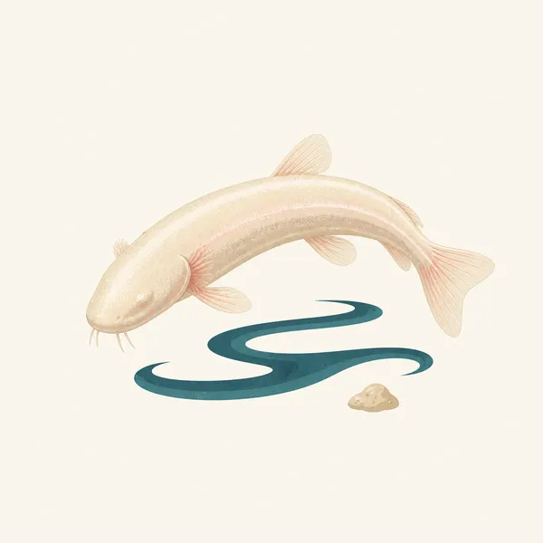
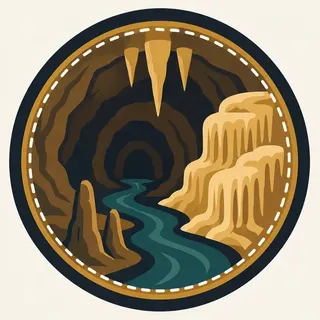

01
426 surveyed miles
The park's statistics page puts the surveyed length at 426 miles, more than twice the next-longest known cave system anywhere on Earth.
TrailMark Archive Edition
Kentucky | Green River
Congress authorized the park on May 25, 1926. It was established July 1, 1941, over a cave already famous for a century.
Archive No. TM-MACA-051
National Park since 1941
Collection Green River Valley
Park Overview
Congress authorized Mammoth Cave National Park on May 25, 1926, and the park was officially established on July 1, 1941. It held 45,310 acres at the time; the current statistics page gives 52,830 acres today.
The cave itself was mapped to 426 surveyed miles as of the park's statistics page, making it, by a wide margin, the longest known cave system on Earth, a title confirmed on September 9, 1972, when explorers connected it to the neighboring Flint Ridge cave system.
UNESCO named the park a World Heritage Site on October 27, 1981, and the core of an International Biosphere Reserve in 1990. It became an International Dark Sky Park on October 28, 2021.
Emotional Thesis
The header painting sets a dark underground river beside gold-lit flowstone and stalagmites, the ceiling hung with stalactites overhead. That river is not invented scenery: Echo River is a real, named waterway within the cave system.
The 426 miles surveyed is not a final number. Cavers keep mapping new passage, and the total has grown for decades; what counts as the longest cave system in the world keeps getting longer.
Landscape Highlights
01
The park's statistics page puts the surveyed length at 426 miles, more than twice the next-longest known cave system anywhere on Earth.
02
A navigable underground river within the cave, its surface elevation given as 412 feet, the lowest point in the cave system by the statistics page.
03
The Green River crosses the surface at 411 feet near Brownsville, the park's lowest surface point, while Brooks Knob rises to 852 feet, the highest.
Wildlife
The cave's own ecosystem, isolated from sunlight, produced species found nowhere else: eyeless cavefish and the endangered Kentucky cave shrimp among them. The extra drawing, a pale cavefish over a dark stream, is the archive's image of that world, not a census.

01
The northern and southern cavefish differ only minutely in size and structure; both lack eyes and the skin pigment their surface relatives have.
02
The Kentucky cave shrimp is a federally endangered species living in the cave's waters, distinct from the fish sharing that habitat.
03
Surface wildlife in the Green River hills above the cave is a separate ecosystem from what lives in the passages below.
Geology
The cave's 426 surveyed miles run through limestone the Green River system has been dissolving and draining for a long geologic time, with 398 feet of total relief between the lowest and highest mapped points.
01
The lowest cave elevation, 412 feet at Echo River, and the highest, 810 feet at the top of an elevator shaft, bracket the system's vertical extent.
02
Cave passage length keeps growing as cavers survey new sections; 426 miles is a current, not final, figure.
03
The surface above, from the Green River at 411 feet to Brooks Knob at 852 feet, sits directly over the passages the park is named for.
Peak surface visitation, with cave tours offering a constant, cool interior temperature as relief from Kentucky's summer heat.
Surface hills along the Green River turn with the season; the cave interior itself does not change with it.
Cave tours continue through winter at the same interior temperature; surface trails and the Green River corridor reflect the cold season.
Surface wildflowers and green-up return to the hills above the cave while the passages below stay constant.
Photography
A cave photograph is entirely a lighting problem; there is no ambient light to fall back on. What is lit, and what stays dark, is the composition.
01
The cave's true character includes total darkness; lighting every corner of a frame erases the thing that makes it a cave.
02
Formations like the ones in the header painting read best when light rakes across their texture rather than flattening it from the front.
03
A single stalactite in isolation could be any commercial cave. Scale, a passage wall, or a formation field situates this specific system.
Field Notes
A blind fish in a dark river needs no eyes down here, and hasn't for longer than the cave has had a name.
TrailMark Field Notes

Badge Story
The badge fails if it is a single icicle-shaped stalactite anyone could mistake for any cave anywhere. Warm light against deep dark, with real formation texture, is the specific picture.
Deep black-brown ground, warm gold light picking out flowstone.
A hint of water, Echo River's dark surface, keeps the underground river present.
No bats on the mark itself; that population belongs in the stewardship notes, not the badge.
Archive No.051
LocationGreen River Valley
ReleaseCave System Mark
Stewardship / Safety
Access to the cave is by guided tour only; the passages are large, dark, and easy to get lost in without one. Surface trails along the Green River carry their own separate rules.
Book ranger-led cave tours through NPS; self-guided cave exploration is not how this park is visited.
Do not touch cave formations. Skin oils halt the mineral growth that took centuries to form them.
White-nose syndrome affects bat populations in caves nationally; follow any gear-decontamination rules NPS posts for visitors who have been in other caves.
Surface trails and the Green River corridor have their own conditions; check current NPS guidance before a visit outside the cave.
Current conditions, fees, and alerts are on the National Park Service site.
Continue the Archive
Carlsbad is a single show cave under the Chihuahuan Desert. Mammoth is the longest known cave system on Earth, 426 miles mapped and still growing. Great Smoky Mountains, also in the Southeast, is the surface version of this same Appalachian country.